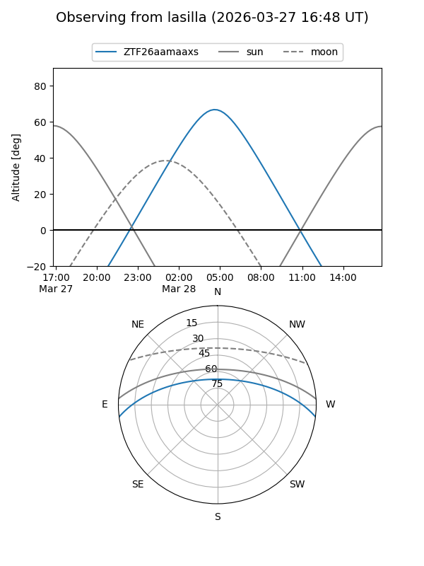
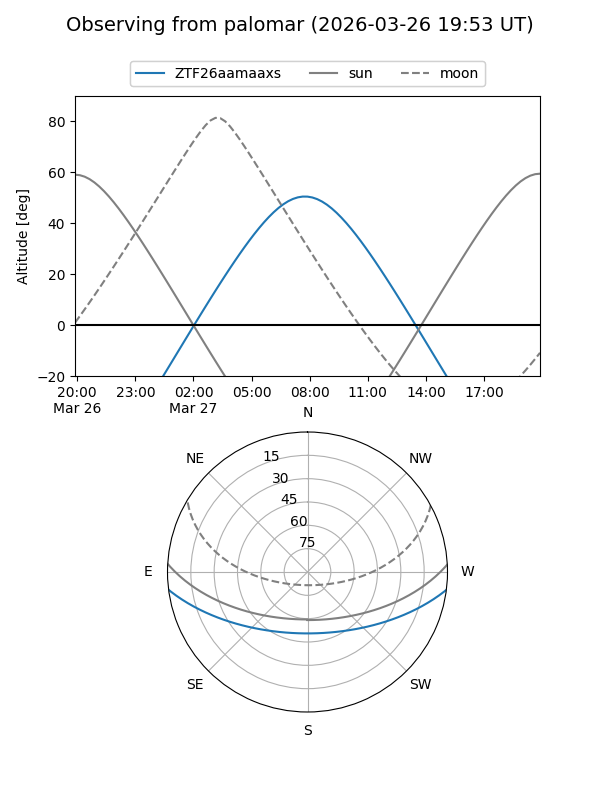

ZTF26aamaaxs
Target ZTF26aamaaxs at 2026-03-27 09:43
Aliases and brokers:
FINK: link
Lasair: link
ALeRCE: link
alt names
ZTF26aamaaxs (ztf,fink_ztf)
Coordinates:
equatorial (ra, dec) = 183.7807,-5.97576
equatorial (HMS+DMS) = 12:15:07.36,-05:58:32.74
galactic (l, b) = (286.7406,+55.75018)
Flags:
Photometry:
last ztfg=17.25
1 ztfg detections
Lightcurve
Visibility


Additional plots